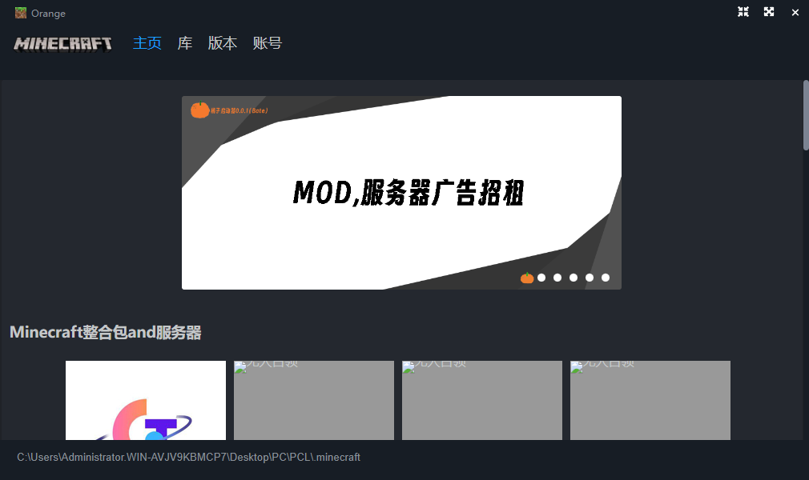

橘子启动器0.0.2BUG更新
橘子启动器界面一览
更新内容
- 更新: 支持高版本forge / fabric
- 更新: 优化了界面的操作逻辑
- 初代启动器,还要什么自行车
BUG修复
- Bug修复: 在第一次进入启动器时出现字体消失的情况
- Bug修复: 在第一次进入启动器时当找不到配置文件会出现错误弹窗
- Bug修复: 在第一次进入启动器时title栏中的账户信息尺寸过大的问题
- Bug修复: 在点击库时异常显示其他元素的问题
- Bug修复: 在获取Profile时出现400报错的问题
- Bug修复: 在获取config的Json值时出现未定义的报错
- Bug修复: 当路径中有中文或者空格等字符时会无法启动游戏的BUG
注意事项
- 启动只能启动原版1.14以上的版本(努力兼容中)
- forge-1.16.5-36.2.34.jar无法启动(玄学BUG)
橘Zz酱的Bilibili: -->>点这点这<<--
橘子启动器QQ交流and提交BUG群: 1145141314
橘子启动器WX交流and提交BUG群: 1145141314
赞助榜单
| 橘Zz酱 | TT | ||||||